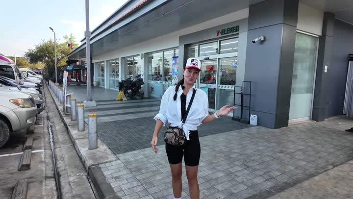
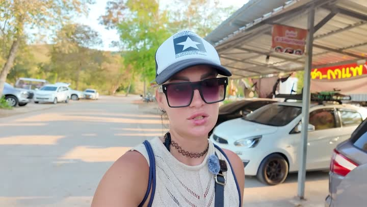
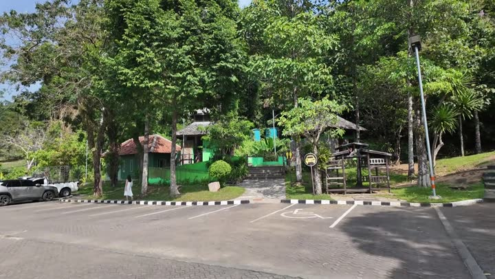
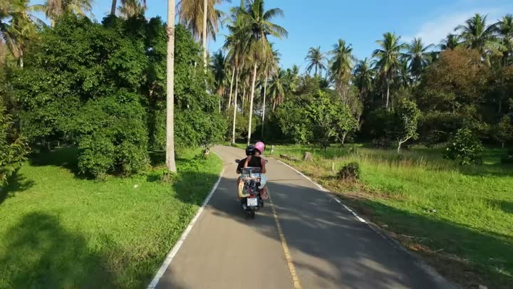

Ко Чанг и Ко Куд — наши места
Наш топ-10
 Секрет Бичпляж · 👍 Советуем
Секрет Бичпляж · 👍 Советуем
остров Чангостров · 👍 СоветуемКакана Бич Резортотель · 👍 Советуем · среднеБар отеля Клонг Хин Бич Резортбар · 👍 Советуем · дёшевоПляж Клонг Праопляж · 👍 СоветуемПляж Лонли Бичпляж · 👍 СоветуемПляж Чайчетпляж · 👍 СоветуемПляж Клонг Праопляж · 👍 Советуем
Остров Ко Кудостров · 👍 Советуем Пляж возле отеля Какана Бич Резортпляж · 👍 Советуем · средне
Пляж возле отеля Какана Бич Резортпляж · 👍 Советуем · среднеС детьми — 2
Красивые виды — 8
Секрет Бичпляж · 👍 Советуемостров Чангостров · 👍 СоветуемПляж Клонг Праопляж · 👍 СоветуемПляж возле отеля Какана Бич Резортпляж · 👍 Советуем · среднеОстров Ко Кудостров · 👍 Советуем
Смотровая площадка K by Pointсмотровая · 👍 Советуем
Фаер-шоу в отеле Кока Кона Резортшоу · 👍 СоветуемКафе отеля Клонг Хин Бич Резорткафе · 👍 СоветуемБюджетно — 4
Частые вопросы — Ко Чанг и Ко Куд
Где можно вкусно и недорого перекусить на островах?
Попробуйте бар отеля Klong Hin Beach Resort или кафе-бар с системой самообслуживания. Там доступны свежие фрукты, смузи и местное пиво по доступным ценам.
Какие развлечения есть на Ко Чанге и Ко Куде?
Можно посетить смотровую площадку K by Point, полюбоваться закатом, отправиться на прогулку к водопадам, покататься на каяках или сапах, посмотреть фаер-шоу в отеле Кока Кона Резорт и даже поплавать со слоном.
Как добраться до островов Ко Чанг и Ко Куд?
До Ко Чанга можно доехать на байке через паромную переправу, дорога занимает около пяти часов. До Ко Куд также ходит паром, путешествие займет примерно полчаса.
Какой пляж выбрать для спокойного отдыха?
Рекомендуем посетить пляж Лонг Бит на Ко Чанге или Секрет Бич на Ко Куде. Оба места отличаются тишиной, чистым песком и прозрачной водой.
Все места — 24
Отели — 3
- Бан Ауракун 👎 Не советуем
- Какана Бич Резорт 👍 Советуем
- Отель Клонг Хин Бич Резорт 👍 Советуем
Бары и ночная жизнь — 2
- Бар отеля Клонг Хин Бич Резорт 👍 Советуем
- Кафе-бар 👍 Советуем
Природа — 2
- Водопад на Ко Куде 👍 Советуем
- Мангровый лес 👍 Советуем
Еда — 1
- Кафе отеля Клонг Хин Бич Резорт 👍 Советуем
Пляжи и острова — 11
- Клонгин Бич 👍 Советуем
- Остров Ко Куд 👍 Советуем
- Пляж 🤔 На любителя
- Пляж Клонг Прао 👍 Советуем
- Пляж Клонг Прао 👍 Советуем
- Пляж Лонг Бит 👍 Советуем
- Пляж Лонли Бич 👍 Советуем
- Пляж Чайчет 👍 Советуем
- Пляж возле отеля Какана Бич Резорт 👍 Советуем
- Секрет Бич 👍 Советуем
- остров Чанг 👍 Советуем
Достопримечательности — 2
- Корабль-призрак (заброшенный) 🤔 На любителя
- Смотровая площадка K by Point 👍 Советуем
Развлечения — 1
- Фаер-шоу в отеле Кока Кона Резорт 👍 Советуем
Рынки, ТЦ и магазины — 1
- магазин Cже Моo 👍 Советуем
Транспорт — 1
- паром 👍 Советуем
Как открыть файл в Google или Яндекс Картах
Google: откройте Google Мои карты → «Создать карту» → «Импорт» → выберите скачанный файл. Карта появится в приложении Google Карты: «Сохранённое» → «Карты».
Яндекс: откройте Конструктор карт → «Импорт» → выберите файл → «Сохранить». Карта откроется в Яндекс Картах на телефоне.
Атлас мест канала «Юля и Дима / БЕЗ ТОРМОЗОВ». Описания составлены по нашим роликам; цены — на момент съёмки. Нашли неточность — напишите нам в Telegram.